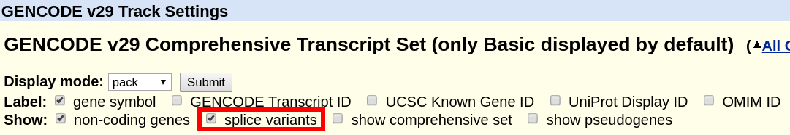

Return to FAQ Table of Contents
The exact definition of "gene" depends on the context. In the context of genome annotation, a gene has at least a name and is defined by a collection of related RNA transcript sequences ("isoforms"). The naming of genes and the assignment of the most important transcript sequences is often done manually by a group of biological literature curators. For human, genes names are created by the Human Gene Nomenclature Committee (HGNC, formerly HUGO). Non-human species have similar annotation groups, e.g. Mouse Genome Informatics, Wormbase, Flybase, etc.
In the Genome Browser, transcript tracks often end with the word "Genes", e.g. "Ensembl Genes", "NCBI RefSeq Genes", or "UCSC Genes". Despite the name, items in these tracks actually represent transcripts on chromosomes of a genome assembly
Transcripts are defined as RNA molecules that are made from a DNA template. Databases like the ones at the National Library of Medicine's NCBI or the European Bioinformatics Institute (EBI) collect these transcript sequences from biologists working on a gene. Every transcript has a unique identifier (accession), a gene that it is assigned to, a sequence, and a list of exon chrom/start/end coordinates on a chromosome.
Most genes have multiple transcripts associated with them. Some of these transcripts differ only in the "untranslated regions" (UTRs), while the coding sequence and resulting protein stay the same. Some transcripts may instead stop in the middle of a coding exon, which changes the protein. Some transcripts may even put the exons together in a different way or skip some exons entirely.
While most genes are associated with multiple transcripts, each transcript is only assigned to a single gene (at least in databases). In other words, different genes never share the same transcript. For example, using the databases by NCBI, the gene with the gene symbol BRCA1 has 5 protein-coding transcripts or isoforms. The first transcript has the NCBI accession number NM_007294.3 which produces the protein with the accession NP_009225.1. In the human genome, it is located on chromosome 17, where it is comprised of 23 exons. On the version hg38/GRCh38 of the human genome, these exons cover the DNA nucleotides 43044295 to 43125483.
Gene symbols such as BRCA1 are easy to remember but sometimes change and are not specific to an organism. Therefore most databases internally use unique identifiers to refer to sequences and some journals require authors to use these in manuscripts.
The most common accession numbers encountered by users are either from Ensembl, GENCODE or RefSeq. Human Ensembl/GENCODE gene accession numbers start with ENSG followed by a number and version number separated by a dot, e.g. "ENSG00000012048.21" for latest BRCA1. Every ENSG-gene has at least one transcript assigned to it. The transcript identifiers start with with ENST and are likewise followed by a version number, e.g. "ENST00000619216.1". Additional details on Ensembl IDs can be found on the Ensembl FAQ page.
NCBI refers to genes with plain numbers, e.g. 672 for BRCA1. Manually curated RefSeq transcript identifiers start with NM_ (coding) or NR_ (non-coding), followed by a number and version number separated by a dot, e.g. "NR_046018.2". If the transcript was predicted by the NCBI Gnomon software, the prefix is XM_ but these are rare in human. A table of these and other RefSeq prefixes can be found on the NCBI website.
Researchers sequence cDNA sequences and send these to NCBI Genbank. The Genome Browser shows these sequences in the Genbank or the EST track (if the cDNA is just a single read from the 5' or 3' end). From the alignment of the cDNAs and ESTs, the NCBI RefSeq group manually creates a smaller set of representative transcripts which we display as the RefSeq Curated track. Automated programs like UCSC's or Ensembl's gene build software do the same, just in software, which is more systematic but also more error-prone. With the arrival of GENCODE, Ensembl added a manual curation to their human and mouse transcripts. NCBI has added an automated prediction software (Gnomon) which we show in the "RefSeq Predicted" track.
There are many other tracks in the group "Genes and Gene Predictions". Genscan and N-Scan are older transcript predictor algorithms that are based on the genome sequence alone. Augustus and AceView are automated gene-predictors that use cDNA and EST data. These and similar gene tracks are only relevant when you are working on a particular locus where you think that the manually curated gene models (Ensembl and RefSeq) have errors.
To illustrate differences between the most common gene tracks, here is an overview of a few different tracks on human (hg38) and how many transcripts they contain as of March 2019:
| Track name | Number of transcripts |
|---|---|
| Known Gene (Gencode comprehensive V29) | 226,811 |
| Known Gene (Gencode basic V29) | 112,634 |
| NCBI RefSeq Predicted Transcripts | 94,389 |
| UCSC RefSeq (Curated) | 80,694 |
| NCBI RefSeq Curated | 73,080 |
| CCDS | 32,506 |
The Genome Browser Group only displays transcripts provided by others. But both RefSeq and Gencode have dedicated staff that look manually at each and every transcript and they know everything there is to know about gene models. They are happy to answer your questions and they can change the transcript annotation. Submit your questions via the RefSeq contact form or the Gencode context form.
This is related to the question What is the difference between "NCBI RefSeq" and "UCSC RefSeq"? below. Briefly, the UCSC refGene track aligns the RefSeq transcripts to the genome with BLAT, with no special filtering but a 95% identity, the NCBI RefSeq track is NCBI's mapping and the NCBI alignments were filtered using manual annotations to make sure that a transcript is mapped only once, even if it is perfectly aligning twice (there is one exception, genes in the PAR regions, see the paragraph below). NCBI uses manual curation to decide on the best placement, for example, if a gene is annotated on chr4, any alignments, even 100% identical, from other chromosomes are removed. As a result, the UCSC RefSeq track contains duplicates if the transcripts align very well to both loci and alerts the user to this fact, where as the NCBI alignments were filtered manually to make sure that every transcript maps only once.
NCBI's transcript mapping, which we provide in our NCBI RefSeq track, does contain a few duplicates, but these have a biological explanation: they are transcripts in the pseudoautosomal regions (PARs). Because they have identical sequences, NCBI rules assign them identical accessions. See the section below for how Ensembl/Gencode handle these cases.
If you compare NCBI's RefSeq GFF files with the Genome Browser ones, note that the NCBI files contain non-gene annotations, without an accession, e.g. TCR or BCR locus names. We put these into the "NCBI Other" track, so "RefSeq curated" contains only transcripts.
The human genome has seven genes located in the pseudoautosomal regions (PARs), which have identical sequences on both chrX and chrY. The Ensembl team assigned these genes identical accessions due to their identical sequences. Since Ensembl release 110 (identical to Gencode release 44), these genes now receive distinct accessions. If you encounter duplicates in Ensembl/Gencode files, they likely originate from file versions predating this update at the EBI.
Some of our gene tracks look similar and contain very similar information which can be confusing.
Officially, the Ensembl and GENCODE gene models are the same. On the latest human and mouse genome assemblies (hg38 and mm10), the identifiers, transcript sequences, and exon coordinates are almost identical between equivalent Ensembl and GENCODE versions (excluding alternative sequences or fix sequences).
GENCODE uses the UCSC convention of prefixing chromosome names with "chr", e.g. "chr1" and "chrM", but Ensembl calls these "1" or "MT". At the time of writing (Ensembl 89), a few transcripts differ due to conversion issues. In addition, around 160 PAR genes are duplicated in GENCODE but only once in Ensembl. The differences affect fewer than 1% of the transcripts. Apart from gene annotation itself, the links to external databases differ.
The GENCODE Release History shows the release dates and can be linked to corresponding Ensembl releases. You can download the gene transcript models from the website https://gencodegenes.org or from http://ensembl.org. For most applications, the files distributed on the GENCODE website should be easier to use, as the third party database links are easier to parse and the sequence identifiers match the UCSC genome files, at least for the primary chromosomes.
Additional information on this question can be found on the GENCODE FAQ page.
Different institutions have different rules on how they annotate genes. E.g. RefSeq's criteria are more stringent, so there are fewer RefSeq transcripts than Ensembl/GENCODE transcripts. Also, RefSeq transcripts have their own sequences independent of the genome assembly, so certain population-specific variants may be in RefSeq that are entirely missing from the reference genome sequence. This has the important implication that the position of genome variants are harder to map to RefSeq transcripts than for GENCODE since RefSeq transcripts can have additional sequence or missing sequence relative to the genome.
The links from either transcript model to other gene-related databases are different. In general, it seems that high-throughput sequencing data results, e.g. RNA-seq, are often using Ensembl/GENCODE annotations and human genetics results are reported using RefSeq annotations. It depends on your particular project which gene model set you want to use. Over time, the two transcript databases have been and are becoming more similar.
The "UCSC Genes" track, also called "Known Genes", is available only on assemblies before hg38. It was built with a gene predictor developed at UCSC. This gene predictor uses protein, EST and cDNA annotations to derive a relatively restricted gene transcript set. The software is no longer in use and there are no plans to release the track on newer human assemblies. It was last used for the mm10 mouse assembly.
The "GENCODE Gene Annotation" track contains data from all versions of GENCODE. "Ensembl Genes" track contains just a single Ensembl version. See the previous question for the differences between Ensembl and GENCODE.
"GENCODE" is the default gene track on hg38 (similar to "Known Genes" on hg19), which means that it is associated with a large amount of third party information when you click on a gene. This related information is also available using the Table Browser. This GENCODE track is updated periodically to match the latest GENCODE release. "All GENCODE" is a super-track that contains all versions of GENCODE as sub-tracks, but these tracks have less third-party information. Sub-tracks are never removed from "All GENCODE", and new sub-tracks are added as there are additional GENCODE releases.
The "GENCODE" track offers a "basic" gene set, and a "comprehensive" gene set. The "basic" gene set represents a subset of transcripts that GENCODE believes will be useful to the majority of users. The "basic" gene set is defined as follows in the GENCODE FAQ:
"Identifies a subset of representative transcripts for each gene; prioritises full-length protein coding transcripts over partial or non-protein coding transcripts within the same gene, and intends to highlight those transcripts that will be useful to the majority of users."
A more comprehensive definition can also be found in the Ensembl FAQ. By default, the track displays only the "basic" set. In order to display the complete "comprehensive" set, the box can be ticked at the top of the GENCODE track description page.
RefSeq gene transcripts, unlike GENCODE/Ensembl/UCSC Genes, are sequences that can differ from the genome. They need to be aligned to the genome to create annotations and UCSC and NCBI create alignments with different software (BLAT and splign, respectively). The advantages of the UCSC alignments are that they are updated constantly even for older assemblies, such as GRCh37/hg19. The advantage of NCBI alignments are that they are placed manually to a chromosome location and are the official alignments, e.g. for databases and manuscripts. Therefore, we recommend working with the NCBI annotations and when an assembly has an "NCBI RefSeq" track, we show it by default and hide the "UCSC RefSeq" track. The only exception may be hg19 (see the note at the end of this section).
The UCSC alignments can differ from the NCBI alignments for two reasons:
Very similar transcripts resulting in transcript location swaps or duplicated transcripts: Let's take the case of two almost-identical transcripts sequences in RefSeq, with two genes in the genome where they could be placed. NCBI has a rule to place every transcript only once, and transcripts are manually tied to a chromosome band or location by NCBI, so each gene will get one and only one transcript of two. NCBI RefSeq will have two genes with one transcript each. UCSC RefSeq though places all transcripts where they align at very high identity, so both genes will get annotated with both transcripts, creating duplicates. For example, the transcript NM_001012276 has three almost-identical possible placements to the genome in the UCSC RefSeq track, as it is entirely alignment-based without any manual filtering. The same transcript NM_001012276.3 is shown at a single location in the NCBI RefSeq track, as the NCBI software will only retain the alignment at the manually annotated location. It may be good to know about almost-identical alignments when doing genomic analysis or manual inspection of NGS read alignments, but for clinical reporting purposes or other automated analyses, we strongly recommend to use the NCBI RefSeq track.
Unclear exon boundaries: In some rare cases, the NCBI and UCSC exon boundaries differ. This happens especially when sequence deletions in the genome make the placement very difficult. Activating both RefSeq and UCSC RefSeq tracks helps you investigate the differences. Activating the RefSeq Alignments track shows NCBI's splign alignments in more detail, including double lines where both transcript and genomic sequence are skipped in the alignment. When available, the RefSeq Diffs subtrack may be helpful too. The upcoming MANE gene set will contain a set of high-quality transcripts that are 100% alignable to the genome and are part of both RefSeq and Ensembl/GENCODE but at the time of writing this project is at an early stage.
An anecdotal and rare example is SHANK2 and SHANK3 in hg19. It is impossible for either NCBI or BLAT to get the correct alignment and gene model because the genome sequence is missing for part of the gene. NCBI and BLAT find slightly different exon boundaries at the edge of the problematic region. NCBI's aligner tries very hard to find exons that align to any transcript sequence, so it calls a few small dubious "exons" in the affected genomic region. GENCODE V19 also used an aligner that tried very hard to find exons, but it found small dubious "exons" in different places than NCBI. The RefSeq Alignments subtrack makes the problematic region very clear with double lines indicating unalignable transcript sequence.
Data format: A small difference is the data format, which matters if you integrate our files into pipelines: The refGene table qName field stores the RefSeq accession but without the version number. The ncbiRefSeq tables show the full accession, with the version number. To add the version number to the refGene table, use a MySQL command like this:
SELECT matches,misMatches,repMatches,nCount,qNumInsert,qBaseInsert,tNumInsert,tBaseInsert,strand,concat(qName, '.', gbSeq.version),qSize,qStart,qEnd,tName,tSize,tStart,tEnd,blockCount,blockSizes,qStarts,tStarts from refSeqAli, hgFixed.gbSeq WHERE refSeqAli.qname=gbSeq.acc
To remove the transcripts on haplotypes, add this condition at the end:
and tName NOT LIKE '%_hap%' AND tName not like '%_alt%' AND tNAME NOT LIKE '%_fix%'
A word of caution on the NCBI RefSeq track on hg19: NCBI is not fully supporting hg19 anymore. As a result, some genes are not located on the main chromosomes in anymore. An example is NM_001129826/CSAG3. For hg19, you may prefer UCSC RefSeq for now.
The mitochondrial sequence included in assembly sequence files is a special case and most of what has been explained on this page does not apply to the mitochondrial gene annotations. For most assemblies in the Genome Browser, the sequence name of the mitochondrial genome is "chrM".
Both GENCODE and RefSeq databases import their mitochondrial gene annotation directly from the rCRS RefSeq record NC_012920.1. RefSeq does not assign NM_ transcript accessions for mitochondrial genes, only NP_ protein accessions, as there is no splicing. The mitochondrial annotation for both databases was provided by Mitomap.org, which contains detailed documentation about the the history of this sequence. We also have a Mitomap track with gene annotations and variant information on both hg19 (chrMT) and hg38 (chrM).
Why chrMT? The assembly hg19 has two mitochondrial genomes, chrM (old) and chrMT (current). The reason is that for hg19, no mitochondrial sequence was in the GRCh37 sequence file. The UCSC Genome Browser originally added a chrM sequence when making hg19 that was not the mitochondrial genome sequence later selected by NCBI for GRCh37. This is why the current hg19 version contains two mitochondrial sequences, the old one called "chrM" and the current GRCh37 reference, called "chrMT". The issue is described in detail in our hg19 sequence download instructions. If you use hg19 today, chrMT should be considered the current mitochondrial sequence, chrM is only supported for backwards compatibility and legacy annotation files. Our hg19.fa.gz in the "current" download directory contains both sequences, the old hg19.fa.gz in the top level download directory has only chrM, for backwards compatibility for old pipelines and our analysisSet fasta file for aligners contains only chrMT. For most purposes when using hg19, we recommend using the analysis set fasta file.
For hg38, there is no issue, it has only chrM, and all mitochondrial annotations are present on chrM.
When reporting on GENCODE/Ensembl transcripts, please specify the ENST identifier. It is often helpful to also specify the Ensembl release, which is shown on the details page, when you click onto a transcript.
When reporting RefSeq transcripts, e.g. in HGVS, prefer the "NCBI RefSeq" track over the "UCSC RefSeq track". Please specify the RefSeq transcript ID and also the RefSeq annotation release.
The Consensus Coding Sequence Project is a list of transcript coding sequence (CDS) genomic regions that are identically annotated by RefSeq and Ensembl/GENCODE. CCDS undergoes extensive manual review and you can consider these a subset of either gene track, filtered for high quality. The CCDS identifiers are very stable and allow you to link easily between the different databases. As the name implies, it does not cover UTR regions or non-coding transcripts.
For the tracks "UCSC Genes" (hg19) or "GENCODE Genes" (hg38), click on their title and on the configuration page, uncheck the box "Show splice variants". Only a single transcript will be shown. The method for how this transcript is selected is described in the next section below and in the track documentation.

For the various single-transcript options of "NCBI RefSeq", please see the discussion of "single transcript" tracks in the next section.
This is a common request, but very often this is not necessary when designing an analysis. You will have to make a choice of this single transcript using some mechanism, and this choice will affect your pipeline results. It may be easier to keep all transcripts. For example, instead of annotating enhancers with the closest "best-transcript", you can annotate them with the closest exon of any transcript. When mapping variants to transcripts, you can map to all transcripts and and show the transcript with the worst impact first. When segmenting the chromosomes into gene loci, you can use the union of all transcripts of a gene, adding some predefined distance, rather than selecting a single "best" transcript.
That being said, the main gene tracks have tables that try to show the "best" transcript per gene. There are many choices, depending on the assembly and the gene track and every selection method has a different aim. For the knownGene tracks (UCSC genes on hg19, Gencode on hg38 and mm10), data tables called "knownCanonical" were built at UCSC. For both Gencode/Ensembl and RefSeq, the NCBI/EBI project MANE selects for each gene the most relevant transcript, as long as these are identical between Gencode and RefSeq. For NCBI RefSeq, the track RefSeqSelect also selects the most relevant transcript(s) for each gene and is not limited to transcripts that are identical between RefSeq and Ensembl. Therefore, the following gene tracks have "best-transcripts" tracks:
UCSC Genes on hg19: For hg19, the knownCanonical table is a subset of the UCSC Genes track. It was generated at UCSC by identifying a canonical isoform for each cluster ID, or gene. Generally, this is the longest isoform. It can be downloaded directly from the hg19 downloads database or by using the Table Browser.
Gencode on hg38/mm10 - knownCanonical: For hg38, the knownCanonical table is a subset of the GENCODE v29 track. It was generated at UCSC. As opposed to the hg19 knownCanonical table, which used computationally generated gene clusters and generally chose the longest isoform as the canonical isoform, the hg38 table uses ENSEMBL gene IDs to define clusters (that is to say, one canonical isoform per ENSEMBL gene ID), and the method of choosing the isoform is described as such:
knownCanonical identifies the canonical isoform of each cluster ID or gene using the ENSEMBL gene IDs to define each cluster. The canonical transcript is chosen using the APPRIS principal transcript when available. If no APPRIS tag exists for any transcript associated with the cluster, then a transcript in the BASIC set is chosen. If no BASIC transcript exists, then the longest isoform is used.
It can be downloaded directly from the hg38 downloads database or by using the Table Browser.
NCBI RefSeq (hg19/hg38): This track collection contains three subtracks that select the most relevant transcript for all or a subset of genes, with slightly different aims:
A common request is to be able to filter by the bioType information from the GENCODE, NCBI RefSeq, or ENSEMBL gene tracks and download the data. The Table Browser is a powerful tool that can be used to filter for these bioTypes. If you are unfamiliar with creating filters using the Table Browser, please refer to the following help page. A few examples of bioType information available in the UCSC Genome Browser include: protein-coding, non-coding, lncRNA, miRNA, piRNA, pseudogene, etc.
When using the GENCODE track, you can query the
knownAttrs table to get bioType
information. Specifically, the fields geneType and transcriptType contain
the biotype information for the GENCODE track. The following output is a
query of the hg38.knownAttrs table, selecting the kgID, geneType, and
transcriptType fields:
#hg38.knownAttrs.kgID hg38.knownAttrs.geneType hg38.knownAttrs.transcriptType ENST00000622482.1 miRNA miRNA ENST00000612139.1 misc_RNA misc_RNA ENST00000625598.1 lncRNA lncRNA ENST00000613359.1 rRNA rRNA ENST00000780342.1 lncRNA lncRNA ENST00000650962.1 TEC TEC ENST00000625020.1 processed_pseudogene processed_pseudogene ENST00000559466.1 transcribed_unprocessed_pseudogene transcribed_unprocessed_pseudogene ENST00000495055.1 protein_coding protein_coding_CDS_not_defined ENST00000461088.1 protein_coding retained_intron ENST00000467409.7 lncRNA retained_intron ENST00000362728.1 snRNA snRNA
The NCBI RefSeq track uses the
ncbiRefSeqLink table to get the biotype for its entries. The field
gene_biotype contains biotype information. The following output is from the
hg38.ncbiRefSeqLink table, selecting the mrnaAcc and gene_biotype fields:
#hg38.ncbiRefSeqLink.mrnaAcc hg38.ncbiRefSeqLink.gene_biotype NM_145005.7 protein_coding NR_030618.1 miRNA XR_929535.2 lncRNA XR_007061920.1 snoRNA NR_023917.1 transcribed_pseudogene NR_003051.4 RNase_MRP_RNA XR_007061908.1 snRNA XR_007061868.1 misc_RNA
For both the GENCODE and NCBI RefSeq tracks, you can query the
kgXref
table to extract bioType information. The description field in the kgXref table can be
used to filter entries when using the GENCODE and NCBI RefSeq tables. However, the biotype
information may be in the form of a paragraph, which might require extra parsing or scripting to
produce a tab-separated file.
Since the primary table is from GENCODE, there may not be a NCBI RefSeq identifier listed in
the output. The following output is from the hg38.kgXref table, selecting the
kgID, refseq, and description fields:
#hg38.kgXref.kgID hg38.kgXref.refseq hg38.kgXref.description ENST00000622482.1 NR_128716 microRNA 6724-3 (from RefSeq NR_128716.1) ENST00000612139.1 ENSG00000274868 (from geneSymbol) ENST00000625598.1 ENSG00000280614 (from geneSymbol) ENST00000613359.1 NR_146153 RNA, 5.8S ribosomal RNA N3 (from RefSeq NR_146153.1) ENST00000780342.1 ENSG00000280441 (from geneSymbol) ENST00000650962.1 ENSG00000286267 (from geneSymbol) ENST00000625020.1 ribosomal protein SA pseudogene 68 (from HGNC RPSAP68) ENST00000559466.1 tektin 4 pseudogene 2 (from HGNC TEKT4P2) ENST00000495055.1 NR_135309 RNA binding motif protein 11, transcript variant 4 (from RefSeq NR_135309.2) ENST00000461088.1 RNA binding motif protein 11 (from HGNC RBM11) ENST00000467409.7 NR_003087 ATP binding cassette subfamily C member 13 (pseudogene), transcript variant A (from RefSeq NR_003087.1) ENST00000362728.1 RNA, U6 small nuclear 859, pseudogene (from HGNC RNU6-859P)
When using the ENSEMBL track, you can use the source field from the
ensemblSource table. The following is output from the hg19.ensemblSource table,
selecting the name and source fields:
#hg19.ensemblSource.name hg19.ensemblSource.source ENST00000596669 retained_intron ENST00000516163 snRNA ENST00000448850 protein_coding ENST00000463070 processed_transcript ENST00000455275 antisense ENST00000608591 lincRNA ENST00000384075 snRNA ENST00000460212 nonsense_mediated_decay ENST00000450472 processed_pseudogene ENST00000581654 miRNA
For automated analysis, if you are doing NGS analysis and you need to capture all possible transcripts, GENCODE provides one of the most comprehensive gene sets. For human genetics or variant annotation, a more restricted transcript set is usually sufficient and "NCBI RefSeq" is the standard. If you are only interested in protein-coding annotations, CCDS or UniProt may be an option, but this is rather unusual. If you are interested in the best splice site coverage, AceView is worth a look.
For manual inspection of exon boundaries of a single gene, and especially if it is a transcript that is repetitive or hard to align (e.g. very small exons), look at the UCSC RefSeq track and watch for differences between the NCBI and UCSC exon placement. You can also BLAT the transcript sequence. Manually look at ESTs, mRNAs, TransMap and possibly Augustus, Genscan, SIB, SGP or GeneId in obscure cases where you are looking for hints on what an alternative splicing could look like.
You may also find the Gene Support public session helpful. This session is a collection of tracks centered around supporting evidence for genes.
We provide files in GTF format, which is an extension to GFF2, for most assemblies. More information on GTF format can be found in our FAQ.
These files are generated for four gene model tables: ncbiRefSeq, refGene, ensGene, knownGene. Certain assemblies, such as hg19, will have all four files while smaller assemblies may only have one or two of these. Which file a user should use depends on their analysis, as they contain different data and metadata.
These files are generated using the genePredToGtf method described in our
downloads FAQ using the -utr flag. They can be found on the download server
address http://hgdownload.gi.ucsc.edu/goldenPath/$db/bigZips/genes/ where
$db is the assembly of interest. For example, the hg38 GTF files.
The best approach to get protein-coding genes out of GENCODE is to join data with a related attributes table, and specifically name the desired biotype(s).
Here is an introductory example using the Public MySQL server to access the wgEncodeGencodeBasicV39 table of all genes and the wgEncodeGencodeAttrsV39 related table to find the transcriptType for each entry and to select those that are annotated as protein-coding genes. There are a number of biotypes that can be accessed by looking at the table scheme and clicking the values link for the transcriptType field. These terms are also more fully described on the GENCODE biotypes page. The example below will attempt to make a simple example to select all types that have "protein_coding" in this transcriptType field:
mysql -u genome -h genome-mysql.gi.ucsc.edu hg38 -e 'select g.name,a.transcriptType from wgEncodeGencodeBasicV39 g, wgEncodeGencodeAttrsV39 a where (g.name = a.transcriptId) and (a.transcriptType = "protein_coding");'
What this query does is access the hg38 database, and then from the wgEncodeGencodeBasicV39 table, it takes the name field (g.name) and looks in the related wgEncodeGencodeAttrsV39 table for a matching transcriptId field (g.name = a.transcriptId), and then screens for only entries in wgEncodeGencodeAttrsV39 that are equal to protein-coding (a.transcriptType = "protein_coding"). In this way selecting all the entries which are annotated as protein-coding. Please note this selection will return some of the unusual protein-coding cases that one would not consider, for instance, it will return genes one may not want (or want), such as Immunoglobulin and T-cell receptor components.
For the manually curated RefSeq gene set, transcript identifiers start with NM_ for coding or NR_ for non-coding, followed by a number and version number separated by a dot, e.g. "NR_046018.2" for an RNA pseudogene. For RefSeq one can select coding genes by filtering for NM identifiers. On the concept of genes, it may be worth noting that the NR_046018.2 example is a transcribed pseudogene of an mRNA. So it is considered an RNA, and by many a lncRNA (long non-coding RNA), where the whole idea of transcribed pseudogenes is not an unambiguous concept to a lot of biologists. For some, another example, "NR_106918.1" represents a miRNA (microRNA), which are short (20-24 nt) non-coding RNAs, which may provide a more familiar idea of the kind of non-coding elements desired to be removed from a gene set.
If using the UCSC knownGene table, one can filter for where the coding start
and coding end fields of the table are not equivalent, e.g.
knownGene.cdsStart != knownGene.cdsEnd, which would ensure the selected
entries are coding genes.
You can also search our mailing-list archives to read further details about only obtaining coding genes from the UCSC Genome Browser.
The steps for selecting non-coding genes are not exactly the opposite of the steps to select only coding genes. The above discussion introduced the idea of lncRNA (long non-coding RNA) and miRNA (microRNA), hinting at the abundant types of RNA molecules.
Since there are many different kinds of non-coding elements in GENCODE, a better step for non-coding selection is to join data with a related attributes table, and specifically name a specific desired biotype or biotypes, such as only lncRNAs. There are a number of biotypes that can be accessed by looking at the table scheme and clicking the values link for the transcriptType field. These terms are also more fully described on the GENCODE biotypes page.
Here is an introductory example using the Public MySQL server to access the wgEncodeGencodeBasicV39 table of all genes and the wgEncodeGencodeAttrsV39 related table to find the transcriptType for each entry and to select just lncRNA entries.
mysql -u genome -h genome-mysql.gi.ucsc.edu hg38 -e 'select g.name,a.transcriptType from wgEncodeGencodeBasicV39 g, wgEncodeGencodeAttrsV39 a where (g.name = a.transcriptId) and (a.transcriptType = "lncRNA");'
What this query does is access the hg38 database, and then from the wgEncodeGencodeBasicV39 table, it takes the name field (g.name) and looks in the related wgEncodeGencodeAttrsV39 table for a matching transcriptId field (g.name = a.transcriptId), and then screens for only entries in wgEncodeGencodeAttrsV39 that are equal to lncRNA (a.transcriptType = "lncRNA"). In this way selecting all of these types, which again, may not be the only subset desired. By modifying the above query, it is possible to add further qualifiers and generate a subset of different non-coding elements meeting specific research needs.
For the manually curated RefSeq gene set, transcript identifiers start with NM_ for coding or NR_ for non-coding, followed by a number and version number separated by a dot, e.g. "NR_046018.2" for an RNA pseudogene. For RefSeq, one can select non-coding genes by filtering for NR identifiers. Note that a pseudogene of mRNA is not an unambiguous concept, and there may be a desire to look further to select certain subset types as mentioned above.
If using the UCSC knownGene table, one can filter for where the coding start
and coding end fields of the table are equivalent, e.g.
knownGene.cdsStart = knownGene.cdsEnd, which would ensure the selected
entries are non-coding genes.
You can also search our mailing-list archives to read further details about only obtaining non-coding genes from the UCSC Genome Browser.